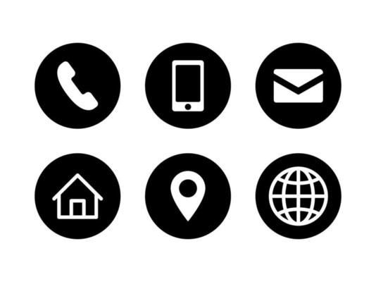

Usman Iqbal

I am a diligent, pro-active and reflective individual who is passionate about web development.
Currently, I am proficient with HTML and I am excited to learn all about CSS next.
I have built 3 HTML projects so far: Movie Ranking Project, Birthday Invite Project and a HTML portfolio.
You can also view my HTML portfolio in my GitHub. I hope to showcase more of my projects in the future, and when I have further upskilled myself, I intend on contributing to open source.
Alongside learning web development, I a full-time teacher who has had middle leadership roles in 'oustanding' schools and been the lead of teams with upto 6 people.
This demonstrates, that I also have well developed soft skills required for working in teams, but that I am also capable of being proactive and managing my own time.
I have taught in international private schools in the Middle East,which has allowed me to work with people from various different backgrounds and cultures.
Overall, I love creating websites and helping drive people towards the websites I have created.
I look forward to working with you
Education
- NPQLT, University College London, 2021-2022
- 2:1 BA (Hons) Primary Education with QTS, Leeds Beckett University, 2013 - 2017
- A Levels, Dixons City Academy, 2011 - 2013
- AS Levels, Ilkley Grammar School, 2010 - 2011
- GCSEs, Yorkshire Martyrs Catholic College, 2005 - 2010
Work Experience
Reach British School
Year 3 Year Group Leader, August 2021 - December 2022
- Promoted, supported and modelled high quality teaching within the year group
- Tracked and monitored the attainment of pupils in the year to address underachievement
- Supported and monitored planning, assessments and pupils' books
- Ensured that marking and feedback was consistent and regular across the year group
- Ensured that positive behaviour management strategies are used consistently by the team
- Supported colleagues to establish safe and stimulating environments for pupils
- • Instructional coaching to support colleagues
Science Coordinator / Year 4 Class Teacher, August 2020 - August 2021
- Developed Science medium term plans which encouraged an inquiry-based approach
- Ensured planning was well sequenced to promote pupil progress
- Ensured Science curriculum was effectively and consistently implemented across the school
- Analysed the impact it had on pupil achievement through data
- Consulted parents about the subject and its effectiveness through parent workshops
- Led CPD for staff on how to effectively use technology during the pandemic
- Delivered high-quality teaching using research-informed practice
Essex Primary School
KS2 Maths Leader / Year 3 Class Teacher, January 2019 - August 2020
- Led CPD for staff to identify how mathematical reasoning can be effectively delivered
- Led part of an international project focusing on the importance of social inclusion and diversity through ERASMUS
- Created opportunities for pupils to increase their confidence in Maths by signing the school up to participate in the London Mayor’s Maths Challenge
- Key member of a team that developed a more effective marking policy
- Present during Ofsted inspection where the school went from being ‘Good’ to ‘Outstanding’
- Used pupil data to inform my planning
Travelling
August 2018 - January 2019
Lidget Green Primary
Year 4 Class Teacher, September 2017 - August 2018
Skills
To be updated
Certifications
- Google Certified Educator Level 1, May 2022 - May 2025
- Apple Teacher, August 2020
Hobbies
Contact
